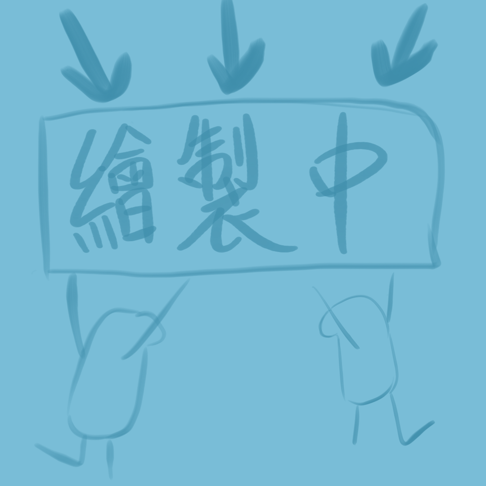
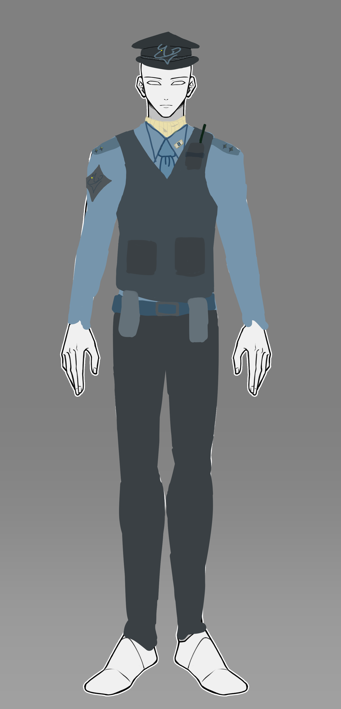
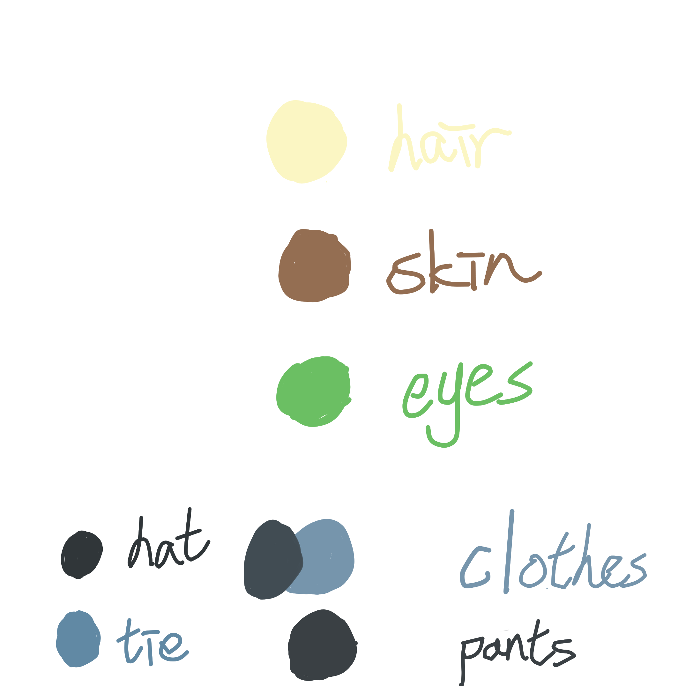

Vosto全域資料庫
「保護民眾是我的職責。」
澤凡是一個富有責任感的警察，卻被判定為有損軍官心理發展而遭到抹殺，本人並不知情，對他來說一生都很愉快。
| 澤凡 Ziv | |
|---|---|
 |
|
| 姓名 | 澤凡 Ziv |
| 生日 | 11月17日 |
| 年齡 | 30歲 |
| 性別 | 男 |
| 身體資訊 | 180公分 | 78公斤 |
| 愛好 |
無 |
| 不喜 |
作亂之人 |
即使只是一名基層警員，也依然做好自己份內的每一件事，擁有驚人的桃花運，但回絕了所有，不管是工作態度還是居家生活，一切似乎都無可挑剔。
他貫徹著表裡如一，卻也並非不諳世事。
皮膚是健康的小麥色，俐落的淡黃色直短髮，綠色的大眼睛，眼尾上翹，有著潔白濃密的睫毛，與飽滿的嘴唇，歐美人的長相，他的家人有著西方人種的血統，一家子都在希安聯邦總部生活。
身體因長年健身與訓練而肌肉明顯，十分勻稱，並不讓人感到反感，穿著制服的他在某些動作下可以清楚的看見肌肉，手臂和手部有著稍微明顯的青筋。
服裝：
．出勤時穿著的是官方警裝，並配戴槍械、警棍、對講機。
．私底下走休閒風，超級喜歡花襯衫，褲子以舒適為主。
在出勤或巡邏時，臉上掛著不苟言笑的神情，遇到前來問事的民眾，會自然浮現笑容，為他人解開疑惑，即使遇到有些不明事理的人，也會客氣的請他們離開，是個耐心十足，脾氣很好的人，除非他侵犯到其他民眾的權益，就會毫不留情的火力全開。
除去奧客，任何類型的生物都會喜歡他，這點特質不知道為他帶來多少桃花，皆逐一禮貌的拒絕，有時候會被派去醫院當陽光小天使，替末期的病患帶來溫暖，這也是他最喜歡做的事情，有餘力時主動參與志工的活動。
不管是任務抑或小事，都會銘記於心，並且認真執行，身邊的鄰居對他讚譽有加。他很聰明，懂得人情世故，因此在警局也混的風生水起。
對自我的要求極高，每天都會很認真的訓練，也會嚴格管理自身的飲食與睡眠，避免出現生病等情形。
他出生在一個美滿的家庭，是家中的獨生子，家人有些年老時才誕下他，不過也因此給了他一個相當溺愛的童年，安斯艾爾與他住在同個社區，兩家交流頻繁。。
他的家人保養得宜，並不需要澤凡去擔憂身體狀況，況且聯邦有著完整的配套措施。
從小就正義感很強。
很早便清楚知道自己是同性戀，對於別人是同類看的很準，是警察世家，因此也選擇了警察這條路，並非托關係，而是靠著自身的努力考上。
說得一口流利聯邦語，基本上能和所有種族無障礙溝通。
結局是遭到安斯艾爾的殺害，終生未嫁娶。
他的故事會圍繞在「復活」以後，對於他的生前事蹟著墨較少，至於是否為同一人？交由諸位來判定。
孟玳卿是他收養的養子，給予高度的支持，受到對方的尊敬與崇拜。
安斯艾爾是他從小到大的玩伴，算是竹馬，相當要好的朋友、摯友。
可以算是三角關係，只是非愛情向。

警察的制服
